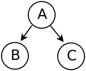
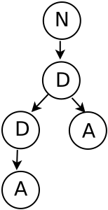
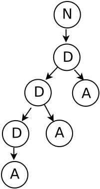
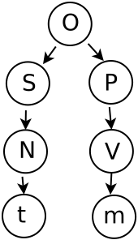

Árboles
Árbol de sintaxis. El árbol de sintaxis abstracta (ASA) o árbol de análisis sintáctico es el resultado de simplificar el árbol sintáctico concreto (ASC) hasta llegar a obtener lo que se necesita para representar el significado del programa. El ASA es un árbol que se define con mayor simplicidad y por lo tanto es más fácil de procesar en las etapas de ejecución. Para representar a los árboles existe una notación que se escribe como a continuación se plantea:
#(ABC)
donde el sı́mbolo # indica que la primera letra dentro del paréntesis es un nodo y los otros caracteres representan a los hijos del nodo, como se muestra en la figura siguiente:

Beneficio del uso de los árboles sintácticos. Nos ayudan a entender la sintaxis de las sentencias.
Se tiene el siguiente árbol:

Si ahora tenemos la gramática de números expresada en forma de producciones:
N → D
D → D A | A
A → 1 | ... | 0
Se puede saber que se obtine del śiguiente árbol, sólamente con verlo:

La siguiente es una gramática de oraciones:
O → S P | P D
S → N
D → N
P → V
N → t | m
V → t | m
Se entiende mejor el árbol siguiente que la gramática de producciones:

Considerar la siguiente gramática, la cual esta en notación BNF (Backus Naur Form):